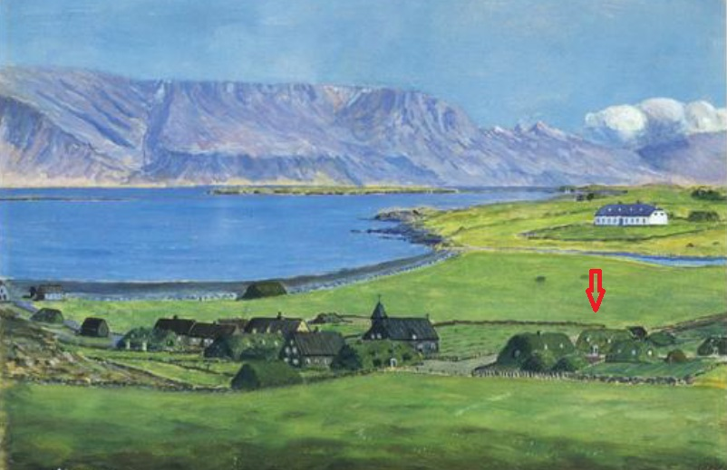

um 1800
Málverk Jóns Helgasonar sem sýnir Reykjavík um aldamótin 1800. Örin bendir á torfbæi sem voru þar sem nú er Tjarnargata 4-6. Þarna stóðu á þessum tíma bæirnir Brúnsbær, Teitsbær auk þess stóð Zuggersbær á sömu slóðum, rétt austan við Brúnsbæ. Óljóst er hvenær fyrst var búið á þeim stað sem Brúnsbær stóð en getið er um bæinn sem hluta af Reykjavíkurbæjunum 1759, en bærinn var rifinn 1834. Teitsbær var reistur árið 1797 og stóð til 1850. Zuggerbær var upphaflega smiðja Innréttinganna, en var síðar búið í. Var þar sem nú er Kirkjustræti 4. Um 1845 stóð til að byggja upp bæinn en yfirvöld bönnuðu það, vildu ekki torfbæi í hjarta bæjarins. Eftir það var bygging torfbæja í miðbænum bönnuð en torfbæir risu áfram umhverfis bæinn. Timburhús reis á sama stað og Zuggerbær var árið 1847 og stóð til 1897 þegar nýtt hús var byggt þar í stað.
